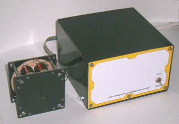
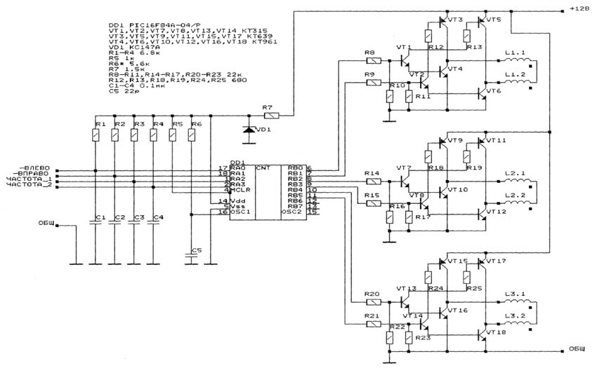
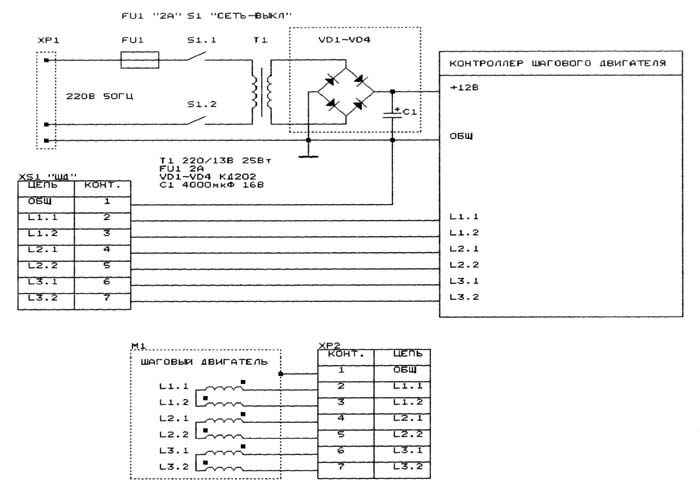
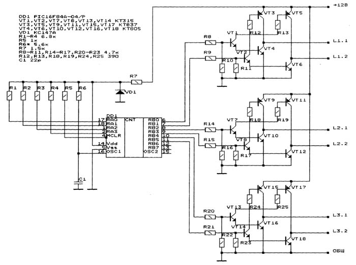
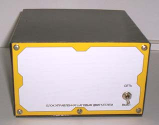
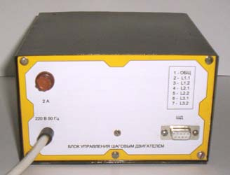
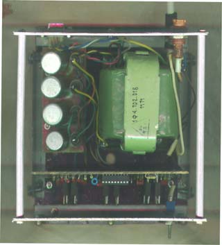

Электронная система управления шаговыми двигателями на PIC-контроллере

При разработке шаговых двигателей (ШД), а также систем управления ими, зачастую требуется перебрать множество различных вариантов многофазных последовательностей импульсов, подаваемых на обмотки двигателя. Построение системы управления (СУ) на дискретных элементах при этом становится трудоемким процессом. Поэтому решено было сделать систему управления таким образом, чтобы ее можно было легко перепрограммировать под конкретный двигатель. Довольно просто эта задача решается с использованием PIC-контроллеров фирмы Microchip, например, PIC16F84 [2]. Контроллер имеет достаточное количество портов ввода-вывода и необходимое быстродействие, допускает многократное перепрограммирование, не является дорогим и дефицитным. Ниже на рис. 1 приведена электрическая принципиальная схема СУ.

Рис. 1. Схема электрическая принципиальная СУ ШД на PIC-контроллере.
Система управления собрана на PIC-контроллере PIC16F84A-04/P (DD1). Рабочая частота определяется цепью R6C5 и составляет около 4 МГц. На выходах RB0 - RB5 формируется многофазная (число фаз от одной до шести) последовательность импульсов, управляющая инверторами VT3 - VT6, VT9 - VT12, VT15 - VT18, к выходам которых можно различными способами (в диагональ инвертора или от одного из выходов к общему проводу) подключать обмотки ШД. Если обмотки ШД включены в диагональ инвертора, как показано на рисунке, то можно получить трехфазную последовательность импульсов с переменной полярностью. На входы RA0 - RA3 подаются сигналы, определяющие направление и скорость вращения. Логика и режим работы двигателя зависят от программы, записанной в контроллер [2]. Цепочка R7VD1 обеспечивает напряжение питания контроллера (DD1) +4.7 В, защиту от неправильного подключения источника питания, а также позволяет использовать форсированный режим работы двигателя (кратковременное повышение напряжения питания) и входные сигналы с TTL-уровнями. На рис. 2 показан внешний вид печатной платы СУ ШД со стороны установки деталей.
Рис. 2. Печатная плата СУ ШД.
Вариант использования СУ можно посмотреть на примере трехфазного шагового двигателя [4, 5].
СУ ШД может быть собрана в виде отдельного блока с питанием от сети переменного тока напряжением 220 вольт частотой 50 герц. Электрическая принципиальная схема одной из возможных модификаций такого блока, предназначенного для управления трехфазным мотор-редуктором [3] шаровой мельницы [6], приведена на рис. 3, 4, а внешний вид показан на рис. 5, 6.

Рис. 3. Схема электрическая принципиальная блока СУ ШД с питанием от сети переменного тока 220 В 50 Гц.

Рис. 4. Схема электрическая принципиальная контроллера ШД блока СУ.
 
Рис. 5. Внешний вид блока СУ ШД с питанием от сети переменного тока 220 В 50 Гц (размеры 150 х 150 х 90 мм3).

Рис. 6. Вид на монтаж блока СУ ШД с питанием от сети переменного тока 220 В 50 Гц.
Ссылки:
03.12.2005
20.10.2006
16.06.2010
Альтернативные источники
энергии
Компьютеры и
Интернет
Магнитные поля
Механотронные системы
Перспективные
разработки
Электроника и
технология